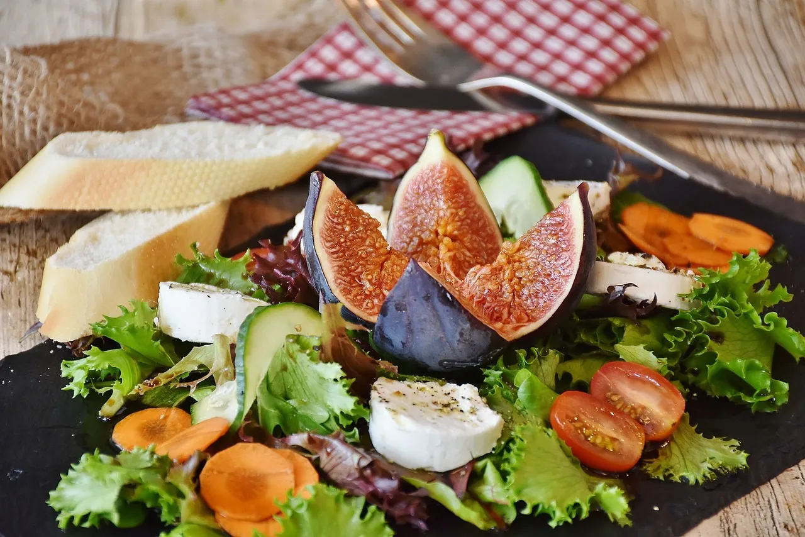

品牌介紹
專注於創意影像設計及製作，使每一個品牌的故事賦予視覺生命。並結合精緻的平面設計以及影片剪輯技術，我們提供專業且具創意的影音服務，從企業形象到個人專案，平面設計、視覺影片製作或是品牌經營，我們都能為您提供量身打造方案。
我們的使命是將每個想法轉化成令人難忘及驚豔的視覺效果，幫助客戶在市場中脫穎而出。無論您是新創品牌或成熟企業，牛午牛影像工作室都將是值得信賴的合作夥伴。
影片剪輯與後製
在牛午牛影像工作室，我們專注於打造精緻且具影響力的影片剪輯與後製服務，無論是企業宣傳片、婚禮影片、社交媒體內容，或是個人創作，我們都能以專業的技術為您的影像故事加分。我們的團隊擁有豐富的影片剪輯經驗，擅長運用各種特效、過渡動畫與音效設計，提升影片的視覺沖擊力。我們不僅注重剪輯的流暢度，還強調每個細節的完美呈現，確保影片的情感與訊息能夠精確傳達。無論是短片還是長片，我們都能根據您的需求提供量身定制的後製方案，讓每個畫面都展現最佳效果。選擇牛午牛影像工作室，讓您的影片在視覺上與情感上都能留下深刻印象。

最新案例
這次「牛午牛影像工作室」為客戶打造了一支高質感的美食短影音，透過細膩的鏡頭語言，完美呈現料理的色香味。從食材特寫到誘人蒸氣升騰的瞬間，每一幀都充滿故事感。我們以流暢剪輯與動感節奏，讓畫面不只吸睛，更讓人食指大動！專業影像，為品牌加分，讓美味更有溫度。

Social Media
發文像放牛吃草，粉絲數卡在「牛」頓第一定律？影片流量低到「午」法呼吸？別怕！牛午牛影像工作室讓你的品牌「讚」聲隆隆，內容「午」敵，觸及率直接「牛」起來！
從爆笑梗圖到吸睛短影音，我們一條龍服務，讓你的品牌不再年低三小（讚、流量、互動）！ #發文不再牛步化 #牛午牛帶你午限上升